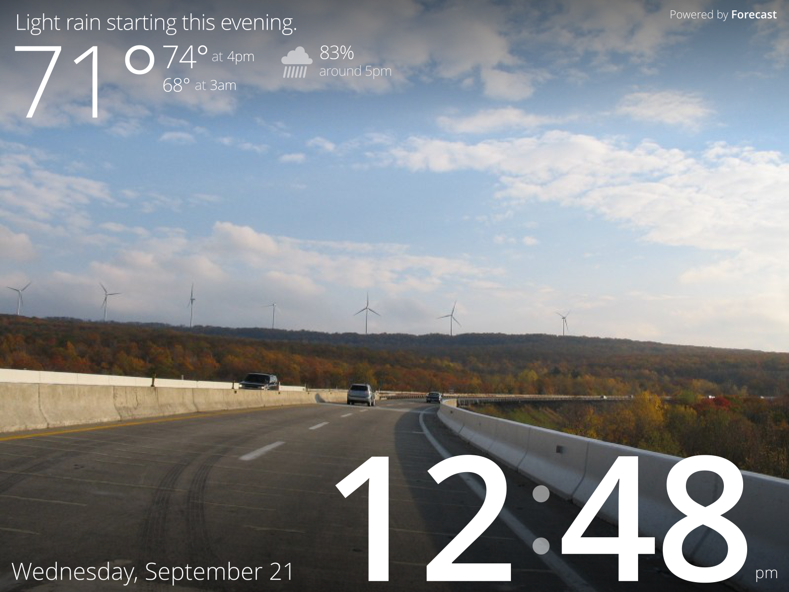
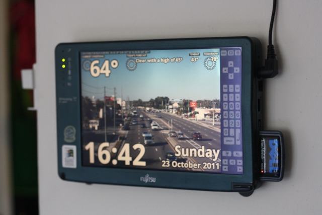
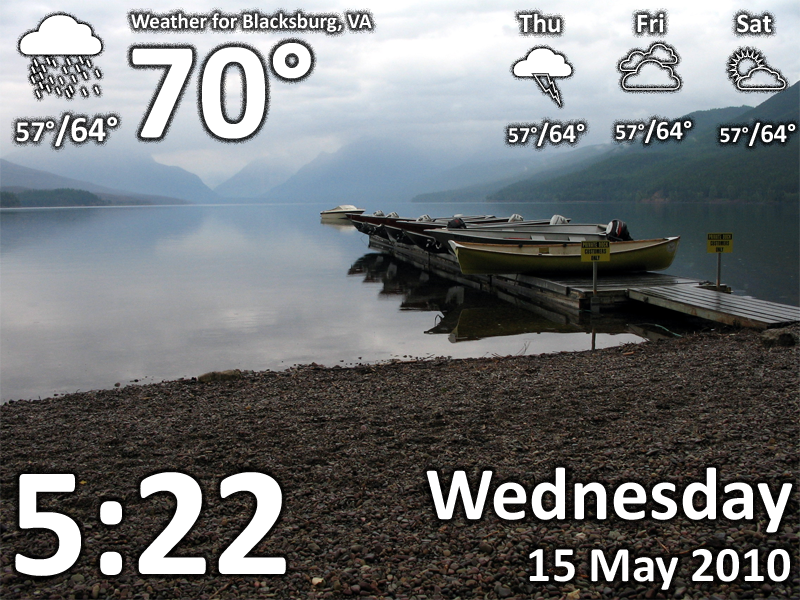
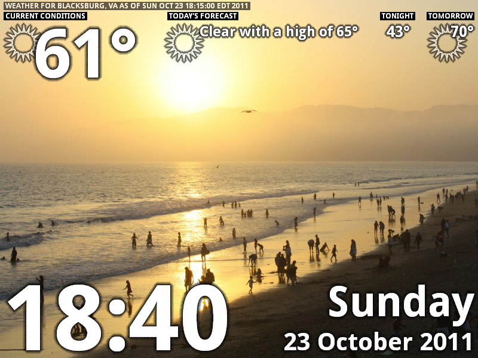
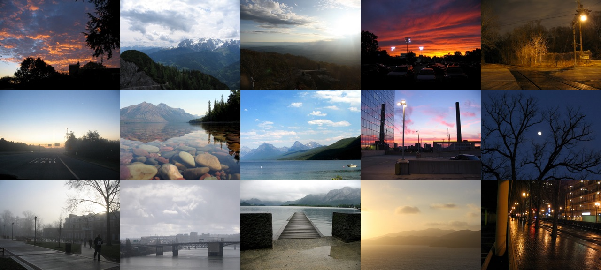

WeatherClock
Always-on weather and time, on any device. Even ones running Windows 98.

Using data from the
Forecast API, WeatherClock
delivers precise and accurate weather information.
Information pertaining to the present moment is displayed with large text for distance
readability.

Originally created to provide a purpose for an old 90s-era tablet running Windows 98,
WeatherClock can run in Internet Explorer 6.
Iterative Design
Using WeatherClock on a regular basis for years has resulted in constant refinements to the design.

The first version drew inspiration from smartphone weather widgets, displaying
the current conditions alongside a 3-day forecast.

Upon realizing that I never used the 3-day forecast, the second version focused solely
on the weather conditions in the present and immediate future.
The third version marks the switch to the Forecast API, adding an emphasis on the precise
data available, such as a textual forecast and hourly rain probabiliy.

Using a set of over 500 original photographs, WeatherClock automatically selects background images
based on the current time of day (factoring in sunrise/sunset times) and weather conditions.
Want to try it?
WeatherClock isn't quite ready for public consumption yet, but don't worry, it's coming!